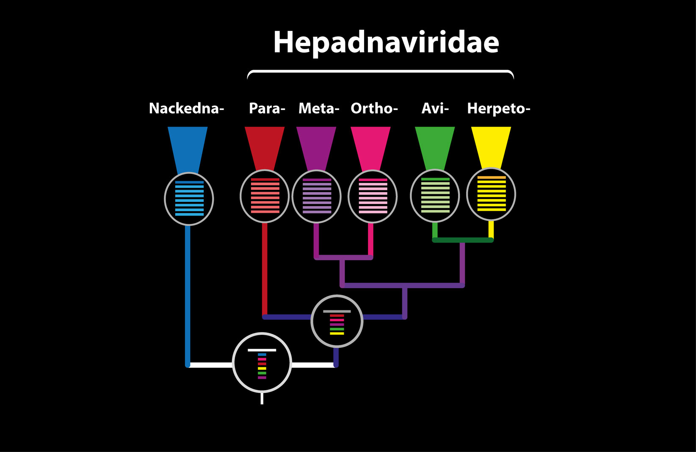

The GLUE alignment tree structure
GLUE projects have the option of using a structure called an 'alignment tree', which links together nucleotide homologies in a useful, evolution-oriented way. An alignment tree is built by first creating constrained alignments for each of the established clades for the viruses of interest. This can be done within GLUE, or externally using any favoured approach to MSA construction.
Where a parent-child relationship between two clades exists within the evolutionary hypothesis, a special relational link is introduced between the corresponding pairs of Alignment objects. Sequence objects are then assigned to clades by adding them as members of the corresponding alignment.
We created a set of linked alignments that represented distinct taxonomic groups and levels within the family Hepadnaviridae. For the lower taxonomic levels (i.e. within and below genus level) we aligned complete coding sequences.

For higher taxonomic levels we aligned the polymerase or RT genes. We used GLUE to link these alignments, via a set of common reference sequences. The root alignment contains all reference sequences, whereas all children of the root inherit at least one reference from their immediate parent. Thus, all alignments are linked to one another via our chosen set of references.
s